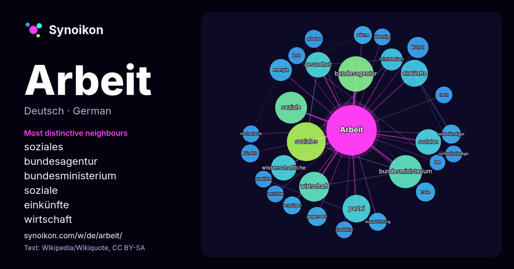

Deutsch · beliebtes Wort
Arbeit
“work” · Die Wörter in seinem Umfeld aus 1073 Vorkommen in Wikipedia, Wikiquote.

Typischste Nachbarn
- soziales 35×
- bundesagentur 32×
- bundesministerium 26×
- soziale 22×
- einkünfte 18×
- wirtschaft 16×
- gesundheit 15×
- sozialen 14×
- wissenschaftliche 14×
- ministerium 11×
- partei 11×
- energie 11×
- selbständiger 9.8×
- vergnügen 8.9×
- wärme 8.7×
- freie 8.4×
- bündnis 8.3×
- kunst 8.1×
- produktive 8.0×
- bete 8.0×
× = wie viel häufiger als in allgemeinem Wikipedia-Text.
Häufigste Nachbarn
- soziales 37
- bundesagentur 31
- bundesministerium 27
- soziale 25
- wirtschaft 22
- partei 19
- einkünfte 18
- deutschland 17
- gesundheit 16
- sozialen 16
- wissenschaftliche 16
- leben 15
- deutschen 14
- energie 12
- familie 12
- ministerium 12
- deutsche 11
- kunst 11
- deutscher 10
- werk 10
Im Kontext
- Arbeit bzw. Arbeiten steht für: Arbeit (Philosophie), Prozess der bewussten schöpferischen Auseinandersetzung des Menschen Arbeit (Betriebswirtschaftslehre) Wikipedia snippets · Arbeit
- Die Bundesagentur für Arbeit (kurz BA, aber auch AA oder Agentur für Arbeit; vor dem 1. Januar 2004 Bundesanstalt für Arbeit; umgangssprachlich auch Arbeitsamt Wikipedia snippets · Bundesagentur für Arbeit
- Ein Arbeiter ist ein unselbständig beschäftigter Arbeitnehmer, dessen Tätigkeit überwiegend aus körperlicher Arbeit mit hoher Arbeitsschwere durch überwiegend Wikipedia snippets · Arbeiter
- Die physikalische Größe Arbeit erfasst die Energie, die durch die Einwirkung einer Kraft entlang eines Weges von einem physikalischen System aufgenommen Wikipedia snippets · Arbeit (Physik)
- Arbeit im philosophischen Sinn erfasst alle Prozesse der bewussten schöpferischen Auseinandersetzung des Menschen. Sinngeber dieser Prozesse sind die selbstbest … Wikipedia snippets · Arbeit (Philosophie)
- Soziale Arbeit bezeichnet sowohl eine wissenschaftliche Disziplin als auch die Tätigkeit der als Sozialarbeiter und Sozialpädagogen bezeichneten Berufsgruppe Wikipedia snippets · Soziale Arbeit
- Die Arbeit steht für: Die Arbeit (1894–1925), österreichische Wochenzeitung Die Arbeit (Deutschland), Monatszeitschrift des Allgemeinen Deutschen Gewerkschaftsbunde … Wikipedia snippets · Die Arbeit
- Arbeit & soziale Gerechtigkeit – Die Wahlalternative (WASG) war eine linksgerichtete politische Partei in Deutschland, die sich im Verlauf des Jahres 2004 Wikipedia snippets · Arbeit & soziale Gerechtigkeit – Die Wahlalternative
Weitere Wörter
- Brücke
- Essen
- Familie
- Geld
- Geschichte
- Gesundheit
- Gold
- Gott
- Kunst
- Leben
- Macht
- Natur
- Tod
- Wahrheit
- Wasser
- Wissenschaft
- Zug
Vorberechnet am 2026-10-09 mit Standardeinstellungen (±5 Wörter, mittlerer Korpus). Die interaktive Karte kann mit Live-Daten aktualisieren.
Maschinell übersetzte Oberfläche; Korrekturen willkommen.